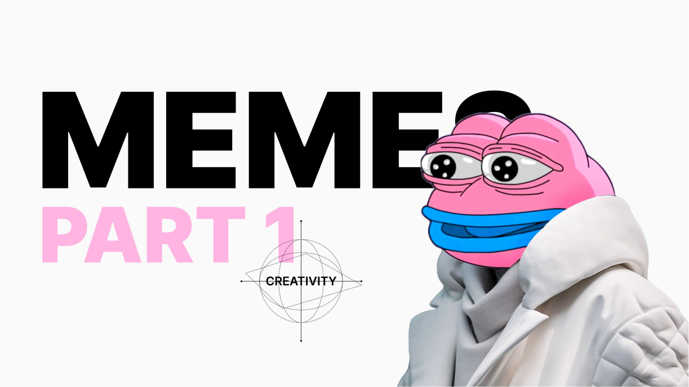

Introduction to the concept
Here is a subject that I feel the nerd in me turn into Charlie from Always Sunny. “There’s a reason 6529, 4156, Jack Butcher, Jacob, & others keep discussing it without a hint of your usual Spiderman pic or favorite Simpsons gif. There’s something deeper here!”
In the context of this series, memes are like light - both particle and wave. Or you could think of them as slime - both a fluid and a solid. The term was coined as the mental equivalent to genes by Richard Dawkins. But there is much more to unpack since 1976.
Let’s look at memes in the realm of artistic expression, story, and information transfer.
In the onchain era, where digital art/cryptoart is the native art movement, the science of memes have become integral to the creation process unlike any other time in history. They are a breeding ground for abstract social convention, soft science exploration, & information (data) transfer.
Pepe the Frog by Matt Furie is the bedrock of this culture’s memebase. When you put Pepe’s head on the Mona Lisa it’s signaling something an entire industry recognizes.
This example only grazes the surface of memes in art. It would not be an over exaggeration to claim that all art contains a meme or two in them - even abstract art.
A meme contains data. Data that is transferrable from one brain to another - and in the same way not every piece of hardware can read every piece of software, not every mind can read every meme.
Here is where the dual nature I alluded to becomes significant. A meme holds data, but it is also the unit measurement of the data. It can be thought of as a code-language.
An example to illustrate this, Pepe the frog contains data that includes:
- satire
- internet culture
- non-conformity
- etc
Not every person will understand the aforementioned when seeing Pepe. There are many who will however; enabling them to communicate at new layers of abstraction (ie. package, transfer, & digest more data at a faster rate). This matters because word-language is very messy and often causes misunderstandings.
Thus, the meme (pepe) acts as data transfer and gatekeeper to the data. This is similar to unit conversion with kilograms and pounds. If you don’t know kilograms/pounds then you don’t know the weight of an individual when expressed in the given metric. If you don’t know the meme (pepe) then you don’t know the message being transferred within the given conversation.
To be continued…